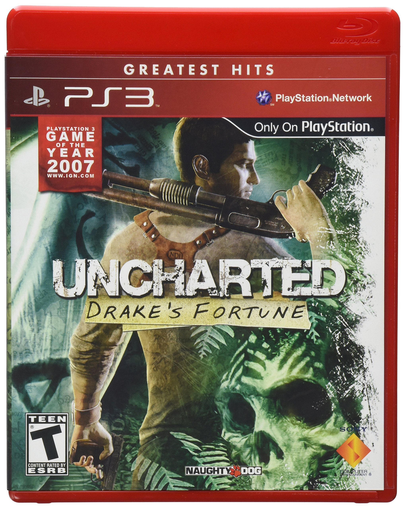
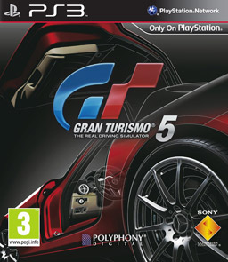

Mengupas Tuntas Inovasi Teknologi PlayStation 3
Era Baru dalam Dunia Konsol Gaming dari Sony

PlayStation 3 (PS3), konsol game generasi ketiga dari Sony, hadir dengan berbagai inovasi teknologi yang menjadikannya bukan hanya sekadar perangkat bermain, tetapi juga pusat hiburan digital yang revolusioner. Mari kita telaah lebih dalam inovasi-inovasi kunci yang membentuk era PS3:
1. Prosesor Cell Broadband Engine: Otak di Balik Performa Unggul
PS3 mengandalkan prosesor Cell Broadband Engine, sebuah mahakarya hasil kolaborasi antara Sony, IBM, dan Toshiba. Keunikan prosesor ini terletak pada arsitekturnya yang terdiri dari satu inti utama (Power Processing Element atau PPE) dan delapan inti sinergis (Synergistic Processing Elements atau SPE). Desain ini memungkinkan pemrosesan paralel yang sangat efisien. Bayangkan sebuah tim yang terdiri dari banyak pekerja ahli, di mana setiap pekerja (SPE) dapat menangani tugas-tugas kecil secara bersamaan di bawah pengawasan seorang koordinator (PPE). Dalam konteks gaming, ini berarti PS3 dapat membagi tugas-tugas kompleks seperti perhitungan fisika, rendering grafis, dan pemrosesan audio ke berbagai SPE, sehingga menghasilkan performa yang jauh lebih baik dibandingkan dengan prosesor tradisional pada masanya yang cenderung bekerja secara berurutan. Arsitektur IBM Cell ini menjadi fondasi bagi kemampuan PS3 dalam menjalankan game-game dengan grafis dan fisika yang canggih pada masanya, membuka pintu bagi pengalaman bermain yang lebih realistis dan mendalam.
2. GPU NVIDIA RSX "Reality Synthesizer": Grafis Kelas Atas
Untuk menghasilkan visual yang memukau, PS3 dipersenjatai dengan GPU NVIDIA RSX "Reality Synthesizer". Dikembangkan bersama oleh Sony dan NVIDIA, GPU ini memungkinkan PS3 untuk menampilkan grafis dengan resolusi tinggi (HD) dan efek visual yang canggih. Dengan kemampuan rendering yang mumpuni, RSX memungkinkan para pengembang game untuk menciptakan dunia virtual yang detail dan hidup. Efek-efek seperti pencahayaan dinamis, bayangan yang realistis, dan tekstur berkualitas tinggi menjadi standar baru dalam game konsol berkat GPU ini. GPU RSX tidak hanya meningkatkan kualitas visual, tetapi juga mendukung fitur-fitur grafis kompleks yang sebelumnya sulit dicapai pada konsol game.
3. Blu-ray Disc: Media Penyimpanan Berkapasitas Besar
Salah satu inovasi paling signifikan dari PS3 adalah menjadi konsol game pertama yang mengadopsi Blu-ray Disc. Format media ini menawarkan kapasitas penyimpanan data hingga 50GB dalam satu keping, jauh lebih besar dibandingkan DVD yang umumnya digunakan pada konsol generasi sebelumnya. Hal ini secara fundamental mengubah cara game didistribusikan. Dengan kapasitas yang besar, pengembang tidak lagi perlu memangkas konten atau membagi game menjadi beberapa keping disk. Game-game dengan dunia terbuka yang luas, cerita yang panjang, dan aset visual yang kaya kini dapat dikemas dalam satu disk tunggal. Selain itu, penggunaan Blu-ray juga menurunkan biaya produksi dan distribusi bagi pengembang. Lebih lanjut, adopsi Blu-ray oleh PS3 juga berperan penting dalam mempopulerkan format ini sebagai standar untuk film berkualitas tinggi.
4. Konektivitas dan PlayStation Network (PSN)
PS3 hadir dengan opsi konektivitas lengkap, termasuk Wi-Fi, Ethernet, dan Bluetooth. Fitur ini memungkinkan pengguna untuk terhubung ke internet dengan mudah. Lebih penting lagi, PS3 memperkenalkan PlayStation Network (PSN), sebuah platform daring yang memungkinkan pengguna untuk mengunduh game digital, bermain game secara online dengan pemain lain di seluruh dunia, membeli konten tambahan, dan terhubung dengan komunitas gamer. PSN menjadi salah satu layanan jaringan game online paling populer dan berpengaruh, membuka era baru dalam interaksi dan kompetisi antar pemain secara global.
5. Dukungan Multimedia: Lebih dari Sekadar Game
PS3 tidak hanya fokus pada game. Konsol ini juga memiliki kemampuan dukungan multimedia yang luas, mampu memutar berbagai format video, musik, dan gambar. Selain itu, dukungan terhadap DLNA (Digital Living Network Alliance) memungkinkan pengguna untuk melakukan streaming media (seperti film, musik, dan foto) dari perangkat lain yang terhubung dalam jaringan rumah yang sama, menjadikannya pusat hiburan digital yang serbaguna. Kemampuan ini menjadikan PS3 sebagai investasi yang menarik bagi konsumen yang mencari perangkat tunggal untuk berbagai kebutuhan hiburan.
6. Kontroler Nirkabel Sixaxis dan DualShock 3
PS3 memperkenalkan kontroler nirkabel Sixaxis yang kemudian disempurnakan menjadi DualShock 3. Kedua kontroler ini menggunakan konektivitas Bluetooth untuk komunikasi tanpa kabel. Fitur inovatif dari kontroler ini adalah sensor gerak (pada Sixaxis) yang memungkinkan interaksi unik dalam beberapa game (misalnya, mengendalikan karakter dengan memiringkan kontroler) dan fitur getaran (pada DualShock 3) yang memberikan umpan balik taktil yang meningkatkan imersi dan interaksi dalam berbagai jenis game. Kontroler ini juga dapat diisi ulang dengan mudah menggunakan kabel USB, menghilangkan kebutuhan akan baterai sekali pakai.7. Sistem Operasi Berbasis Linux dan Pembaruan Firmware
PS3 menjalankan sistem operasi berbasis kernel Linux, yang memberikan fleksibilitas dan keamanan yang lebih tinggi. Sony secara berkala merilis pembaruan firmware untuk PS3, yang tidak hanya memperbaiki bug dan meningkatkan kinerja, tetapi juga menambahkan fitur-fitur baru dari waktu ke waktu. Sistem yang updateable ini memastikan PS3 tetap relevan dan terus berkembang sepanjang masa pakainya, memungkinkan Sony untuk terus menyempurnakan fitur dan menambahkan dukungan untuk teknologi baru.
Game Unggulan yang Menunjukkan Kekuatan PS3
Grand Theft Auto V

Dunia terbuka luas dan detail berkat kekuatan Cell dan RSX.
The Last of Us
Grafis dan cerita sinematik yang memukau.
Uncharted Series
Efek visual dan gameplay yang menawan.
Metal Gear Solid 4
Cutscene panjang dan gameplay strategis.
Gran Turismo 5 & 6
Visual realistis dalam simulasi balap.
God of War III
.jpg)
Pertarungan epik dan grafis yang memukau.
Penutup
Dengan inovasi teknologi yang revolusioner pada masanya, PlayStation 3 tidak hanya mengubah lanskap konsol game, tetapi juga menetapkan standar baru untuk pusat hiburan digital. Mulai dari arsitektur prosesor Cell yang unik, kualitas grafis dari GPU NVIDIA RSX, adopsi Blu-ray Disc, hingga layanan online PlayStation Network, pengaruh PS3 sangat terasa hingga generasi konsol berikutnya, menjadikannya bagian tak terpisahkan dari sejarah game modern. Contoh game-game unggulan di atas semakin menegaskan bagaimana teknologi canggih PS3 memungkinkan para pengembang untuk mewujudkan visi kreatif mereka dan memberikan pengalaman bermain yang tak terlupakan bagi para gamer.